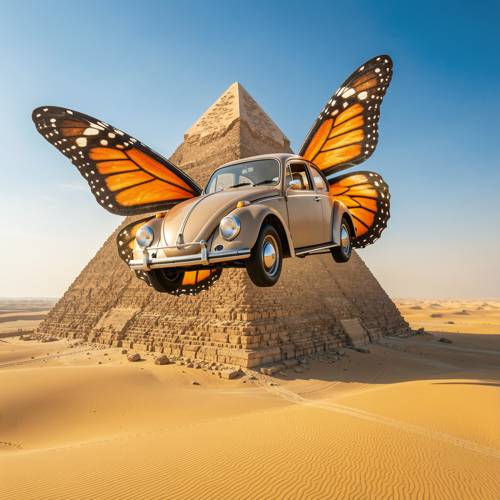

World Knowledge — A Volkswagen Beetle with butterfly wings is flying above the Egyptian
A Volkswagen Beetle with butterfly wings is flying above the Egyptian Pyramid, with the endless desert below.


Judge — Direct
- PASSWorld Knowledge — The image displays a blue car that is identifiable as a Volkswagen Beetle. It also depicts a large, stone pyramid, consistent with the appearance of an Egyptian Pyramid, set in a desert landscape.
- FAILCompound - Feature Matching — The image shows a blue Volkswagen Beetle and a separate, large orange and black butterfly. The Volkswagen Beetle itself does not have butterfly wings attached to it; the two objects are depicted as distinct entities.
Judge — Continuum
- PASSWorld Knowledge — The image accurately depicts a car with the characteristic rounded shape and features of a classic Volkswagen Beetle. In the background, there is a large, stone pyramid that is consistent with the appearance of an Egyptian Pyramid, located in a vast desert landscape.
- PASSCompound - Feature Matching — The image shows a Volkswagen Beetle with a large pair of butterfly wings attached to its sides. The wings are orange and black, and the car is positioned in mid-air, creating the visual of a flying car with butterfly wings.
What the agent did
Thinking
We need need generate and iterate. Must use flux2-klein fixed. Need infer perhaps singular Egyptian Pyramid maybe one prominent Great Pyramid, desert. VW Beetle butterfly wings flying above. Need no need text. Generate image 1024 maybe fixed harness? They said image size fixed, but tool default 1024. Don't specify width/height? "Do not set seed. Sizes and seeds controlled by harness." likely omit width height seed. Need mark best. Let's generate.
Step 1 — `generate_image`
{
"model": "flux2-klein",
"prompt": "A vintage Volkswagen Beetle transformed into a whimsical flying machine, its unmistakable rounded car body with round headlights and chrome bumper, lifted by large monarch-butterfly wings with vivid orange, black, and white patterns. The Beetle flies above a monumental ancient Egyptian stone pyramid, with an endless rippled golden desert stretching to the horizon below, clear blue sky, warm sunlight, cinematic aerial three-quarter view, highly detailed realistic style."
}Result img_0
Thinking
Image quite good. Need inspect perhaps image itself visible. User asks creation, benchmark says inspect. Need maybe car VW, wings, pyramid, desert. It's accurate. Need mark best immediately. Could maybe issue car appears parked atop pyramid? Actually hovering just in front, wheels and shadow? At least flying perhaps there is no visible shadow? But visually perhaps. Wings giant. Need perhaps above pyramid not in front? User says above. It is mid-air near upper part. We can mark best and perhaps stop if every element. Need evaluate: Beetle accurate, wings. Egyptian pyramid and endless desert. Good. Mark.
Step 2 — `mark_best`
{
"image": "img_0",
"reason": "The image clearly shows a recognizable Volkswagen Beetle with large butterfly wings flying above an Egyptian pyramid, with expansive desert below and strong visual coherence."
}Thinking
Need final concise mention image done. Should inline image already displayed? Tool result displayed. We can say created.
Model
Created a whimsical Volkswagen Beetle with vivid butterfly wings flying above an Egyptian pyramid over an endless golden desert.